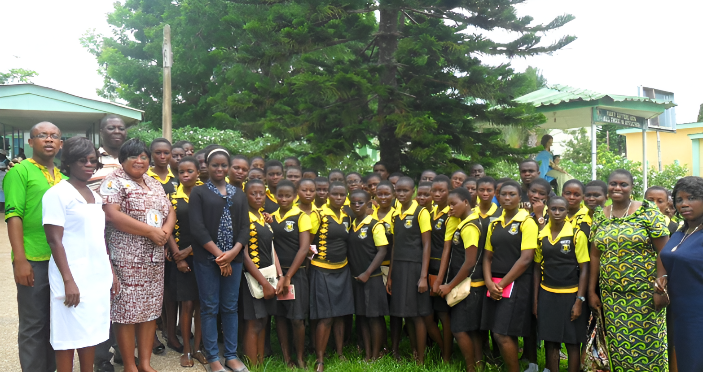
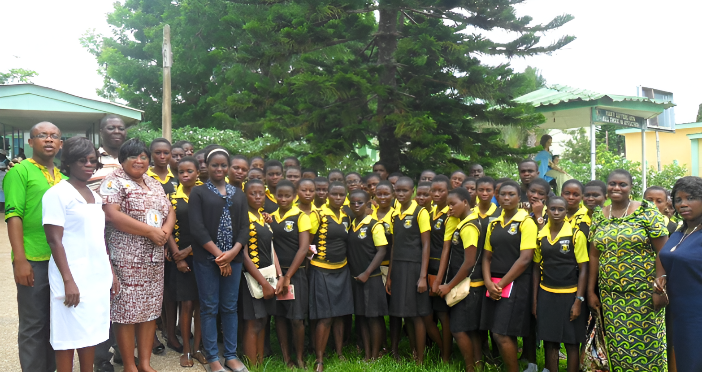
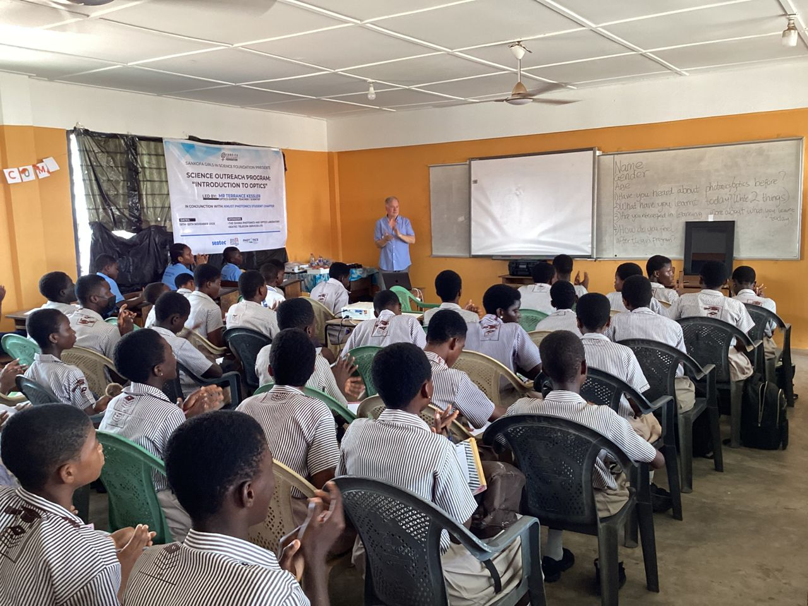
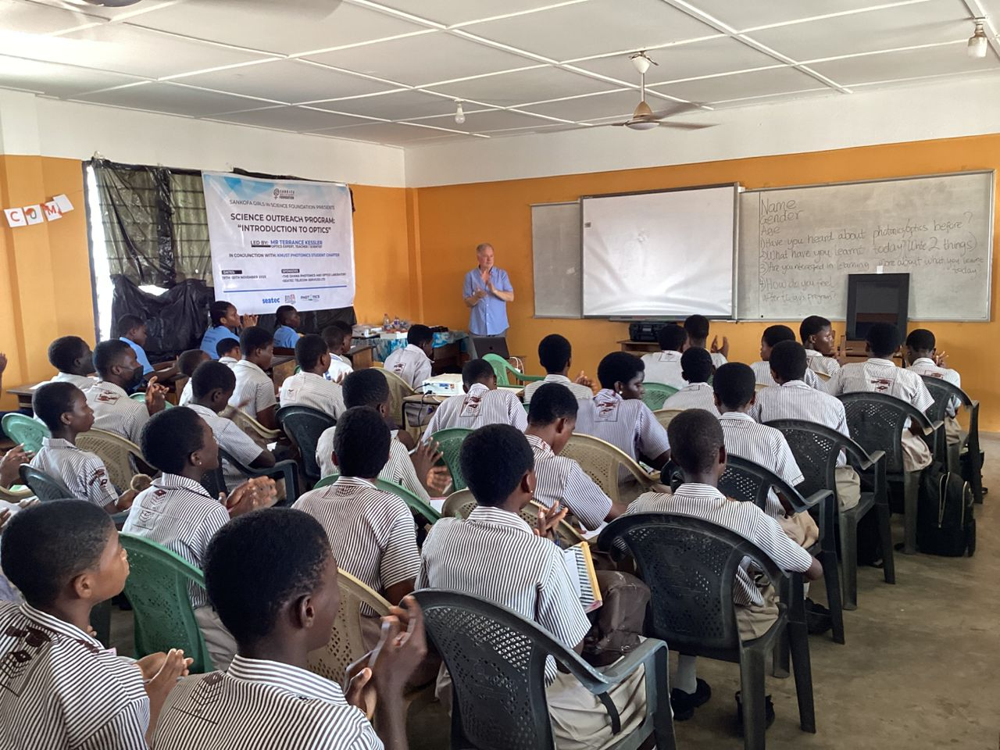
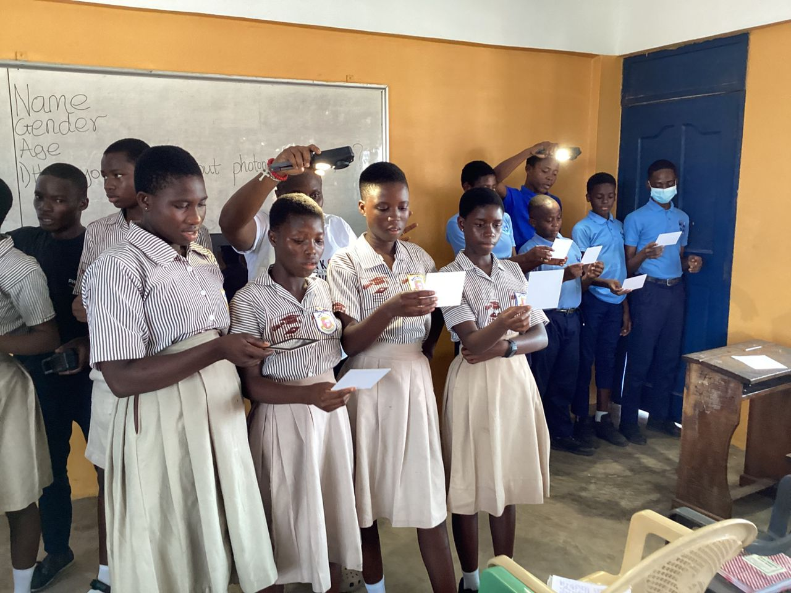
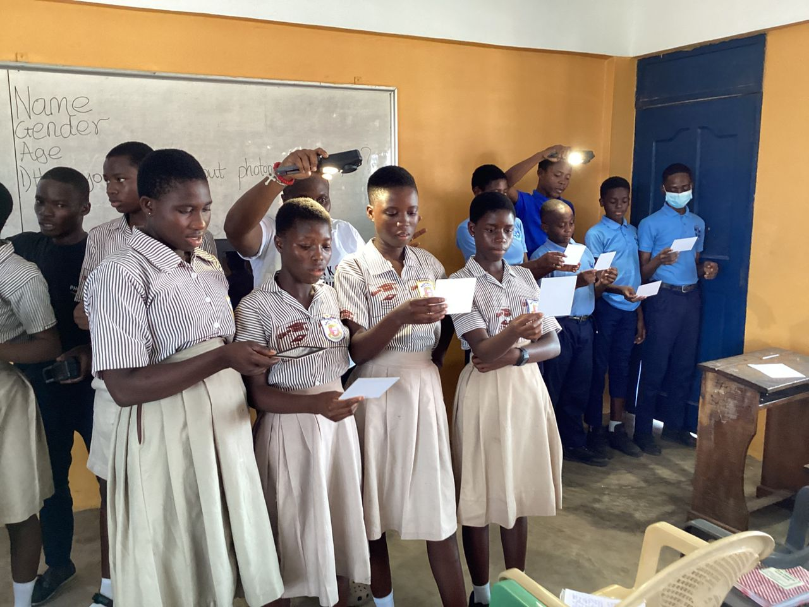

ABOUT US
In 2010, Nana Beecham returned to her hometown of Breman Asikuma with
a single mission: to prove that a girl’s potential is not defined by
her geography. What began as a one-off mentoring program with the
Black Women’s Leadership Council (BWLC) at Xerox has blossomed into a
movement that is 15 years old and counting!.
Our name comes from the Ghanaian proverb "Sankofa" which means "Return
and fetch it". We believe in reaching back to our roots to empower the
next generation. We are bridging the gap in Ghana’s STEM
landscape—where the ratio of boys to girls in science can drop from
2:1 in high school to a staggering 7:1 in university.
As such, we have set out to not only promote the study of science but
build the confidence for girls to lead it. Through global mentorship
and hands-on resources, we ensure that when a girl rises, her entire
community rises with her.

 

 

 
